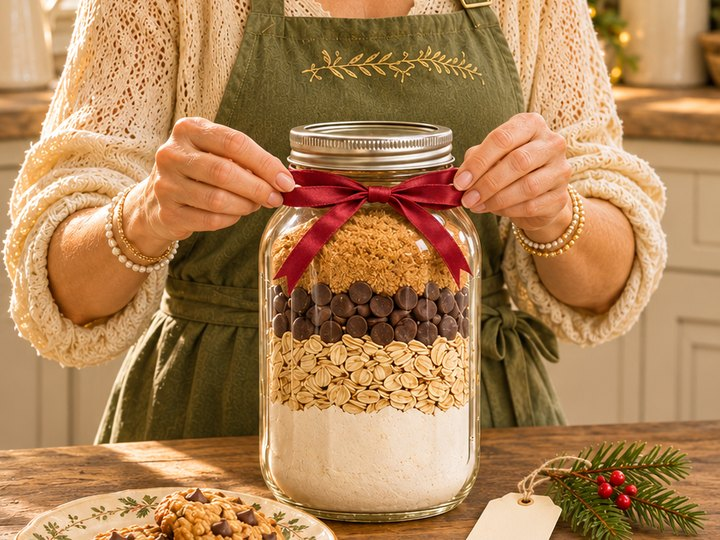
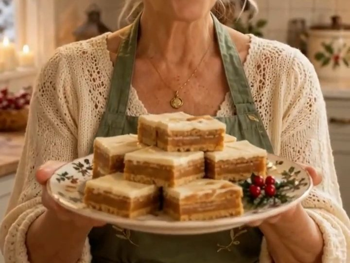
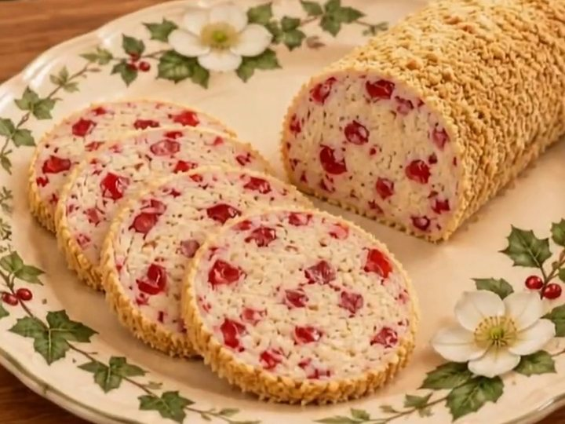
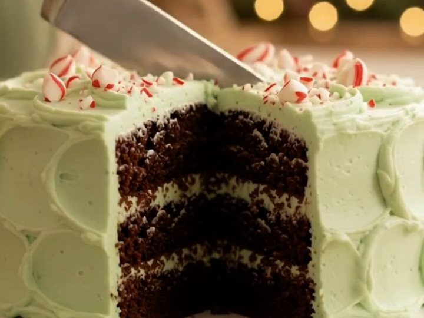
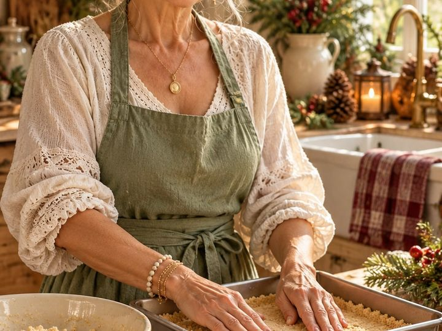
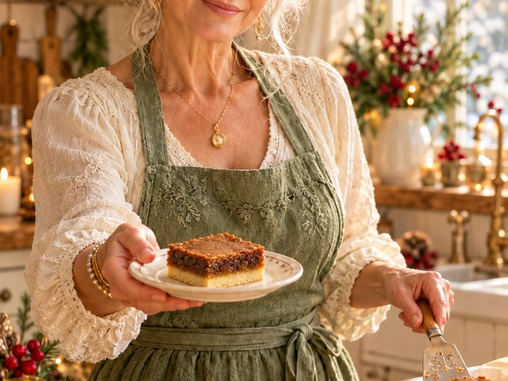

🍪 Easy Baking Ideas
Simple baking, no fuss
Easy squares, cookies and no-bake treats, each with a short video, plus friendly answers when your baking doesn't behave. No fancy skills required, just a 9 × 9 pan and a sense of humour.

Before you start
The Sage's baking basics
These are the recipes I come back to every December: old-fashioned squares, a melt-in-your-mouth shortbread, a proper devil's food cake and a few no-bake treats for the days when the oven is already full. None of them need special equipment or fancy skills. Most use one pan and ingredients you probably already have in the cupboard.
A few small habits make every one of them turn out better:
- Spoon and level your flour. Scooping straight from the bag packs in extra flour, and that's the most common reason squares turn out dry and shortbread turns out crumbly.
- Line your pan with parchment. Leave a little overhang on two sides so you can lift the whole slab out and cut neat squares on a board.
- Metal pans bake more evenly than glass. If you only have glass, lower the oven by about 25°F and start checking a few minutes early.
- Let squares cool completely before cutting. Patience is the difference between tidy squares and a delicious puddle.
- Most squares and cookies freeze well. Bake in November, wrap well, and December gets a lot calmer.
Each recipe below has a short video so you can see how it should look, plus tips on storing, freezing and swaps. And when something doesn't go to plan, the Dear Sage baking answers further down this page are there to help.
Recipes with videos
The Sage's easy recipes
Need a 9 × 9 pan or good measuring spoons? 🛍️ Shop Grandma's Kitchen →

Gift in a jar
Cookies in a Jar
Get the recipe →
No-bake
OMG Butterscotch Delights
Get the recipe →
No-bake
Grandma's Snow Log
Get the recipe →
Cakes
Devil's Food Cake with Peppermint Frosting
Get the recipe →
No-bake
No-Bake Quick Lemon Squares
Get the recipe →
Squares
Butterscotch Toffee Bars
Get the recipe →
Squares
Christmas Gumdrop Bars
Get the recipe →
No-bake
Chocolate Confetti Squares
Get the recipe →
Squares
Butter Tart Bars
Get the recipe →
Cookies
Cornstarch Shortbread
Get the recipe →Dear Dancing Sage
When your baking doesn't behave
Baking help
Why is my shortbread crumbly?
Read the answer →
Baking help
Why do my cookies spread flat?
Read the answer →
Baking help
Apple pie with cheddar cheese: is that really a thing?
Read the answer →Baking help
How do I get ahead on baking without living in the kitchen?
Read the answer →More recipes
A Calm & Simple Christmas
Festive recipes, gentle planning and permission to do a little less this year.